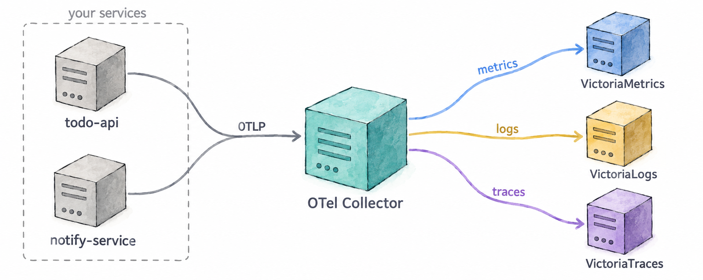
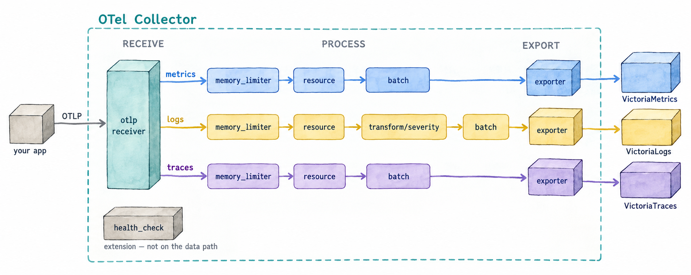

Module 5: The OpenTelemetry Collector
In Module 4 your application started sending all three signals to a single address,
otel-collector:4318, and they ended up in three different backends. This module is about
what sits at that address: what the OpenTelemetry Collector is, what it can do, and what
the one in this workshop is already doing to your telemetry. 📦
Learning Objectives
By the end of this module, you will:
- Know what the OpenTelemetry Collector is and where it sits between your application and your backends
- Know its building blocks — receivers, processors, exporters, connectors and pipelines
- Know the kinds of problems it solves
- Be able to say what this workshop’s Collector does to your metrics, logs and traces
5.1 — What the Collector is
The OpenTelemetry Collector is a standalone program, part of the OpenTelemetry project, that receives telemetry, processes it and sends it on. It is vendor-neutral: it speaks OTLP, the OpenTelemetry protocol, and dozens of other formats, in and out.
Your application doesn’t need it — an SDK can export straight to a backend. But putting a Collector in the middle changes who has to know what:

- Your application knows one endpoint. It sends everything over OTLP to the Collector and is done. It doesn’t know which backends exist, where they are, or what each one expects.
- The Collector knows everything else. Which backend gets which signal, at what URL, with which headers, and what to change on the way. Change a backend, add a second one, or start dropping something noisy, and no application has to be redeployed.
5.2 — The building blocks
A Collector is configured from a handful of component types:
| Component | What it does | Examples |
|---|---|---|
| Receivers | Get telemetry in — by listening for it or by fetching it | OTLP, Prometheus scraping, log files, Kafka |
| Processors | Change telemetry on the way through | batch, filter, add or remove attributes, sampling, redaction |
| Exporters | Send telemetry out | OTLP to any compatible backend, Prometheus remote write, Kafka, files |
| Connectors | Join two pipelines: an exporter on one and a receiver on the other | turn spans into metrics, route by attribute |
| Extensions | Things that aren’t about the data itself | health checks, authentication |
Components are wired together into pipelines, one per signal. A pipeline says: take the metrics (or logs, or traces) from these receivers, run them through these processors in this order, and hand them to these exporters. A component that is declared but not used in any pipeline does nothing.
5.3 — What it can do
Most of what makes a Collector worth running falls into a few groups:
- Routing. Send each signal to the backend that stores it, or the same signal to two backends at once — useful during a migration.
- Enrichment. Add attributes the application doesn’t know about: the environment, the cluster, the region.
- Normalisation. Make telemetry from different SDKs, languages and versions look the same before it is stored, so queries and dashboards only deal with one shape.
- Reduction. Drop what you don’t need — health-check spans, debug logs, an attribute nobody queries — before you pay to store it. Sample traces, keeping the interesting ones.
- Protection. Remove sensitive data, such as emails or tokens, in one place instead of in every application.
- Derivation. Produce new telemetry from existing telemetry, such as request rate, errors and duration computed from spans.
- Reliability. Batch telemetry for efficiency, retry when a backend is down, queue while it recovers, and refuse work rather than run out of memory.
- Translation. Accept telemetry in one format and send it in another — scrape Prometheus endpoints, read log files, receive Jaeger or Zipkin.
It is commonly deployed in two ways, often both at once: as an agent next to each application, on the same host or in the same pod, and as a gateway, a central pool that agents and applications send to.
5.4 — What this workshop’s Collector does
The Collector you have been sending to since Module 4 is configured in
collector/config.yaml. You don’t need to read or change it; this is what it does.

Receivers
- OTLP, on port 4318 (HTTP) and 4317 (gRPC). This is where
todo-apiandnotify-servicesend their metrics, logs and traces. - Its own metrics. The Collector reports on itself — what it received, what it sent, how full its queues are — and scrapes those numbers into its own metrics pipeline, so they land in VictoriaMetrics like any other metric. The Telemetry pipeline row of the Auto-Instrumentation dashboard in Grafana is built from them.
Processors, applied in this order:
memory_limiter— makes the Collector refuse data when it is close to its memory limit, instead of crashing and losing everything.resource— addsdeployment.environment=workshopto all telemetry, so every metric, log and span says which environment it came from, even if an application forgot to set it.transform/severity— logs only. The JavaScript SDK reports levels in lower case (info) and the Python SDK in upper case (INFO). This processor converts them all to upper case, so a query forERRORfinds errors from both languages.batch— groups telemetry into larger requests before sending it, which is far cheaper for both the Collector and the backends.
Exporters, one per backend:
- VictoriaMetrics receives the metrics.
- VictoriaLogs receives the logs, with a
VL-Stream-Fieldsheader that tells VictoriaLogs how to group them into streams: byservice.nameanddeployment.environment. - VictoriaTraces receives the traces.
Extensions
health_check, on port 13133. It answers whether the Collector is up;doctor.shuses it.
And the pipelines that connect them:
| Signal | Receivers | Processors | Exporter |
|---|---|---|---|
| Metrics | OTLP, its own metrics | memory_limiter, resource, batch |
VictoriaMetrics |
| Logs | OTLP | memory_limiter, resource, transform/severity, batch |
VictoriaLogs |
| Traces | OTLP | memory_limiter, resource, batch |
VictoriaTraces |